Cómo entrar a tu panel
Cuando activamos tu cuenta te enviamos por WhatsApp el link de acceso (club-login.html) junto con tu correo y una clave inicial. Guarda ese link — es la puerta de entrada a todo tu club.
- Ingresa tu correo y tu clave y toca "Ingresar".
- ¿Olvidaste tu clave? Toca "¿Olvidaste tu contraseña?" y te llegará un correo para definir una nueva.
- Puedes entrar desde el celular o el computador — funciona igual en los dos.
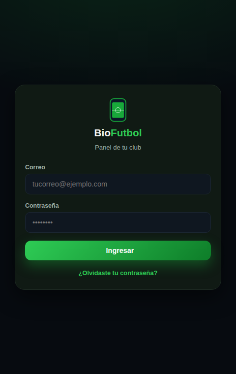
Inicio: tu club de un vistazo
Apenas entras, ves lo más importante: cuántos socios tienes, partidos jugados y pendientes, pagos por cobrar, tu próximo entrenamiento y tu próximo partido — con acceso directo a cada módulo desde el mismo lugar.
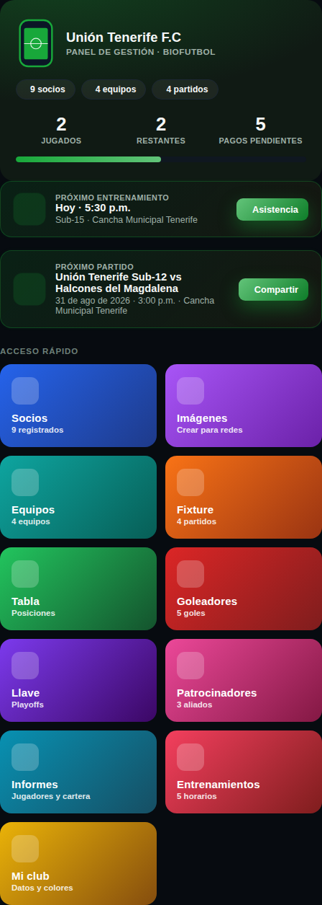
Socios: tus deportistas al día
Aquí registras cada socio o jugador: datos personales, categoría, salud, y el estado de su mensualidad. Toca cualquier socio de la lista para abrir su ficha completa, editar sus datos, ver su carnet digital o crearle su propio acceso.
- Verde: al día con el pago · Amarillo: por vencer · Rojo: vencido.
- Desde la ficha puedes marcar el pago, registrar peso y talla, y enviar recordatorios por WhatsApp.
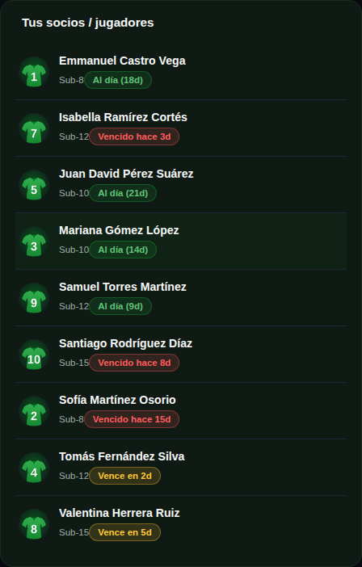
Profesores: un acceso para cada entrenador
Registra a tus entrenadores y asígnale a cada uno las categorías que dirige. Puedes crearle un acceso propio para que entre a su panel, tome asistencia y vea solo a sus alumnos — sin ver nada administrativo del club.
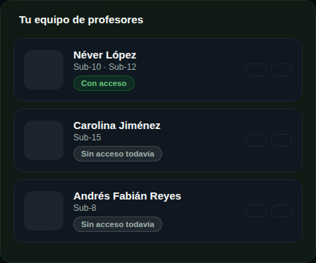
Entrenamientos: sedes, horarios y asistencia en vivo
Configura tus sedes y el horario semanal de cada categoría — eso es lo que ven los padres en su panel. El día del entrenamiento, activa la asistencia: todos quedan presentes por defecto y solo marcas al que falta.
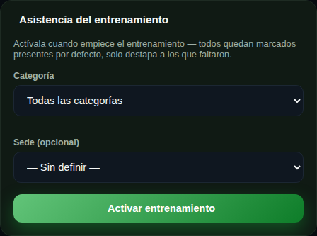
Equipos: organiza tus categorías
Crea un equipo por cada categoría de tu club (Sub-8, Sub-10, Sub-12...) con su escudo. Los equipos son la base del Fixture, la Tabla de posiciones, los Goleadores y la Llave.
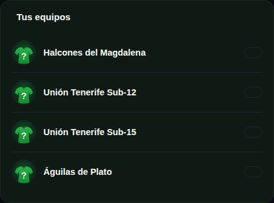
Fixture y resultados
Programa cada partido: fecha, hora, cancha y rival. Cuando se juega, registra el resultado, los goleadores y las tarjetas — todo lo demás (tabla, goleadores, llave, disciplina de torneos) se actualiza solo.
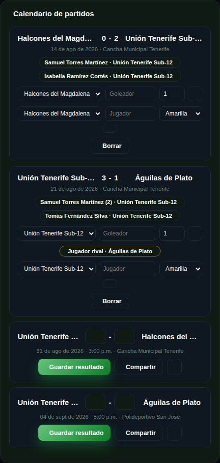
Tabla de posiciones
Se calcula sola con cada resultado que registras en el Fixture — cero cálculos a mano. Tus socios la ven también desde su panel.
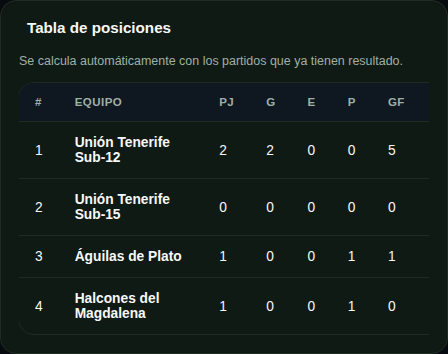
Goleadores
La tabla de goleadores se arma sola a partir de los goles que registras en cada partido del Fixture.
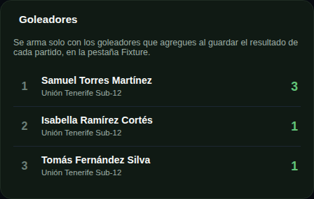
Llave: eliminación directa
Elige cuántos equipos entran (potencia de 2), acomódalos en las posiciones y BioFutbol arma el cuadro completo. Ve guardando los resultados de cada cruce y el ganador avanza solo a la siguiente ronda.
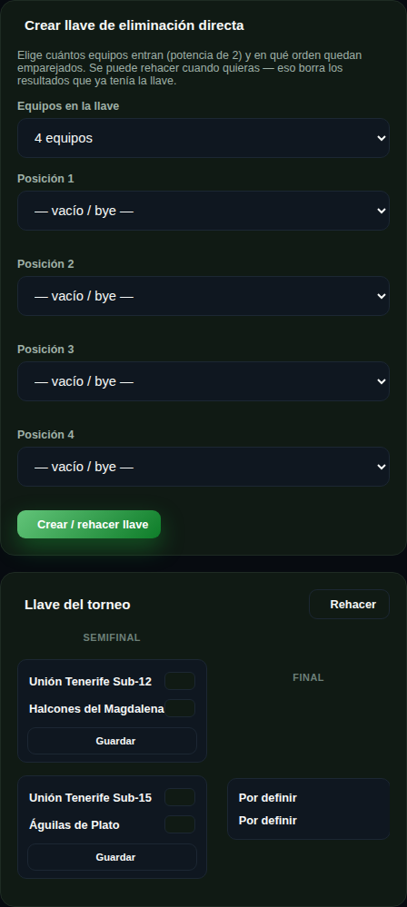
Torneos: inscripciones y control disciplinario
Registra cada torneo o campeonato en el que participa tu escuela. Controla qué jugadores ya pagaron su inscripción, y revisa las tarjetas acumuladas por torneo — BioFutbol te avisa solo cuando un jugador queda sancionado.
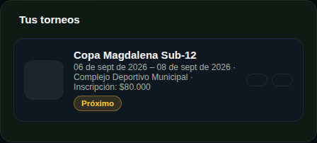
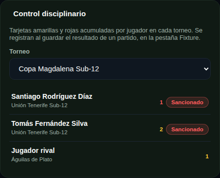
Imágenes para redes sociales
Genera en un clic las artes de tus partidos, la tabla de posiciones, goleadores, cumpleaños y más — con el escudo y los colores de tu club, listas para publicar en WhatsApp e Instagram.
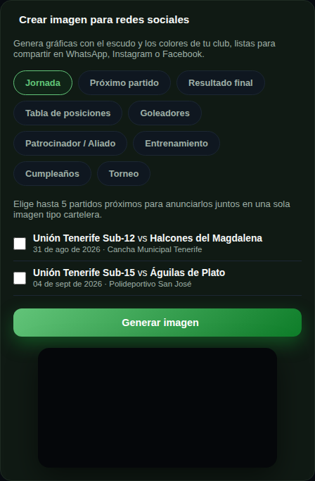
Patrocinadores
Registra los negocios que patrocinan tu club. Sus logos aparecen automáticamente en el carnet digital de los socios y en las imágenes de partidos — visibilidad real para quienes te apoyan.
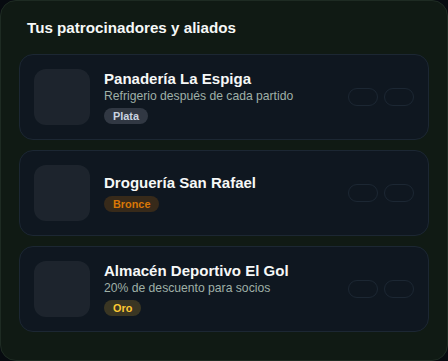
Informes: jugadores, cartera, excusas y nutrición
Desde Informes generas en PDF: el listado completo de jugadores, el estado de cartera del club, constancias deportivas para el colegio o el trabajo, y el reporte de estado nutricional de todo tu club.
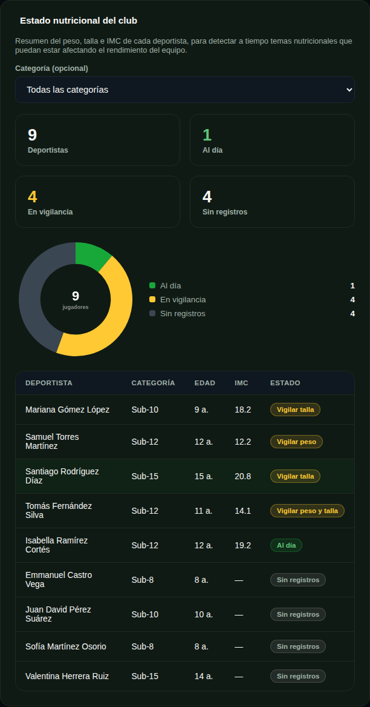
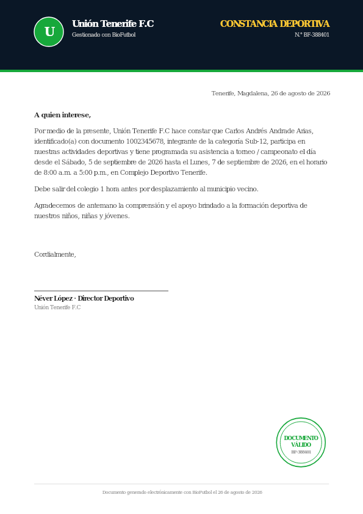
Mi club: personaliza tu app
Sube el escudo de tu club, define tus colores, tu mensualidad y tus datos de pago (Nequi, Wompi). Todo esto se refleja al instante en el carnet, las imágenes y el panel de tus socios.
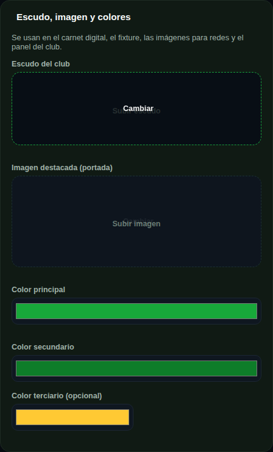
¿Tienes dudas?
Escríbenos por WhatsApp y te ayudamos a sacarle el máximo provecho a tu app.
Escribir por WhatsApp